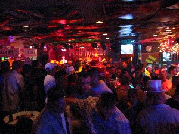
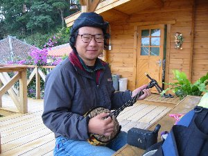
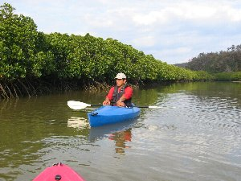
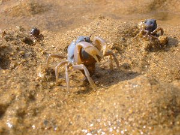

沖縄アクティビティ | 2002年12/28〜2003年1/5 |
|---|---|
| とりあえずこんな感じで廻りました 28日 名古屋から沖縄へ（那覇市：都ホテル） 29日 首里城→旧海軍司令部壕→ひめゆりの塔→本島最南端（沖縄市：みどり荘3000円） 30日 残波岬→万座毛→オリオンビール工場（名護市：ホテル東和3000円） 31日 八重岳→海中道路パーク→ゴザのclubで年越し（沖縄市：グレイスホテル3500円） １日 比地大滝→本島最北端辺戸岬（国頭村：ホテルみやしろ２食付き6300円） ２日 東村でマングローブカヤック、やんばるトレッキング（国頭村：ホテルみやしろ２食付き6300円） ３日 最北端を再度周り東海岸を南下（那覇：民宿シモジョー2000円） ４日 北部崎本部で体験ダイビング（那覇市：都ホテル） ５日 沖縄から名古屋へ | |
 「Jef」のゴーヤバーガー |  ライブバー「FUJIYAMA」店内 |
| お正月休みを暖かい南国「沖縄」にて過ごすため、我々は仕事納めの翌日機上の人となった。 今回は「クライミング」のキッカー班と、「島内グルグルアクティビティ」のシュガー班に分かれまして、ココではシュガー班（べっしー共）をお伝えします。 長くなるのもアレなので、ポイントで紹介します。（一般的な観光は削除） 12/31 年越しをアメリカンBARですごす為、沖縄市ゴザの「グレイスホテル」に宿泊。着いた早々、管理人のじいさんがドアノブの説明を始める。（突然ドアノブをカウンターの上に・・・）何でもアメリカ式で、内カギの掛け方が特殊だとの事。それをやたら自慢げに話す。 部屋はじいさんが言ったとおりやけに暗く、部屋の中までアメリカ映画の三流ホテルを連想させる。窓には鉄格子がハマってるし・・・・ 夜、居酒屋で腹ごしらえをして ライブバー「FUJIYAMA」に向かう。ココはライブが行われ、もっともアメリカ的なバーとガイドブックにあったので、シュガー氏の期待大！ 中に入ると狭い店内に、アメリカ人がひしめき合い（と言うか、ほぼアメリカ人）、大音量のライブが始まっていた。カウンターでビールを買い、後ろの方の席に陣取る。 大体、米軍基地近くなので米軍兵士が多いと思われる。（店内には店員以外、日本人は我々だけのようだ。まさにアメリカ。ほとんどの人が立っている。しかし、会話は英語のみ。 ここで、シュガー氏はビールを米軍兵士に盛大に引っ掛け、「ファック ユー！」等と叫ばれるが、睨まれながらも握手をしていた。その後もこのアメリカ人とは何回か会話らしきことを交わす。 年越しカウントダウン時はＵ・Ｓ・Ａコールが出るなど、盛大な年越しとなった。 | |
 比地大滝までの遊歩道 |  比地大滝にて |
| 1/1 沖縄本島の北部は「やんばる（山原）」と呼ばれる森林が広がっている。ここの比地大滝まで行く。 入場料200円だかを払い、立派に整備された遊歩道を30分位で滝に到着。ココまで何段階段があったか不明。やけにＵＰ・ＤＯＷＮが激しい。 観光客も多いが、緑も多い。川に沿って行くのでマイナスイオンもバッチリ。滝はゴウゴウと叫びながら水を落としていた。 | |
|  「やんばる自然塾」にて 三線を引くシュガー |  マングローブにてカヌー 「やんばる自然塾」の比嘉さん |
| 1/2 東村の「やんばる自然塾」の午前「マングローブカヌー」、午後「やんばるトレッキング」ツアーに参加。同じツアーメンバーはあと、同じ年ぐらいの夫婦1組。 午前の引き潮を狙って、マングローブが茂っている川にカヌーで漕ぎ出す。引き潮のときが、いろいろ見れて良いとか。 マングローブとは木の名前ではなく、このように海水と淡水が混ざり合う境目ぐらいに根を下ろす植物の総称なのだそうです。（たしか・・・） この塾では、いろいろな事を教えていただけます。動・植物の名前や生育など、昔や現在のやんばる事情等、メモ帳を持っていないと書ききれないほどです。（当然私は持っていいなかった） マングローブでは、飛ぶ宝石等と言われる「かわせみ」を見ることが出来ました。これはホント綺麗でした。コバルトブルーの鳥が水面を飛ぶ姿は感動です！ 途中まで行くとちょっと上陸し、マングローブがどの様に子孫を増やすのかのレクチャーもありました。（下の写真見てね） 後半は海に出て沖縄の海を堪能します。１月といえど水はそれほど冷たくなく、透き通る青色でした。 「やんばる自然塾」http://www.yanbaru.ne.jp/~shizen-j/ | |
 マングローブの種（苗？）です。 これが枝の先にぶる下がっており、 時期が来ると落ちて下の土に刺さるんだそうです。 （これは木の種類によって違うのでマングローブ全部が これのわけではありません） |  この蟹はすごく小さいのですが、前に歩くんですよ。 人の気配を察すると、すばやく土の中に潜ってしまいます。 名前を忘れてしまいました〜 |
続き（２）へ